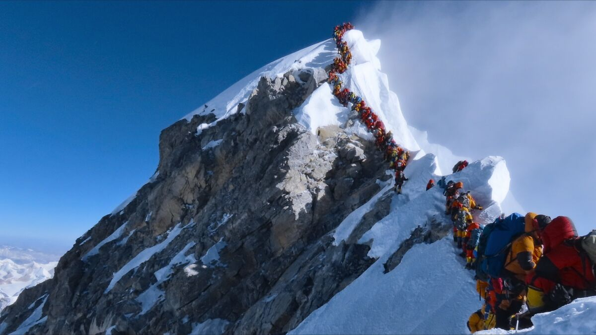

This is Reason, from Nepal. I am a junior with Computer Science Major in Northwest Missouri State University. I am fond of anything with Artificial Intelligence. I don't have any prior industry experience but I have been working on few of my personal projects. I find Astronomy fascinating so I like to explore things online about technologies used in spacecrafts and possibilities of deep space exploration during my spare time.
The movie is about a person named Nirmal Purja (Nims Dai) who submitted all the 14 peaks above 8000 meters including the highest mountain Mt. Everest, and most dangerous and second highest mountain Mt. K2 within the world record breaking time of under 7 months and some without oxygen. Its one of my favorite beacuse this non-fictional movie provides me motivation to push through the limit and at the same time engourages me to encourage everyone around me.
